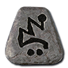

Thirty-three runes form the El-to-Zod chain. Three Wax runes sit outside it and do not upgrade. Their socket bonuses depend on the slot. To make a runeword, insert its runes in order into a plain item with exactly the required sockets.
Each rune’s item page lists monster sources and numeric odds by difficulty. Runes stack in the stash's Runecraft tab.
Find a runeword or upgrade runes with the Cube chain below. El-to-Zod recipes, and their drops in the campaign, are unchanged from Diablo II. Hell's endgame drops them more often: from Stone tier VI and Descent band II 1.5 times as often, and from Stone tier XI and Descent band IV twice as often.
The upgrade chain
Three runes of one kind make one of the next in the Horadric Cube. From Thul upward the recipe also takes a gem, and from Pul upward it takes two runes instead of three.
 Eldrops only
Eldrops only Eld3 El
Eld3 El Tir3 Eld
Tir3 Eld Nef3 Tir
Nef3 Tir Eth3 Nef
Eth3 Nef Ith3 Eth
Ith3 Eth Tal3 Ith
Tal3 Ith Ral3 Tal
Ral3 Tal Ort3 Ral
Ort3 Ral Thul3 Ort
Thul3 Ort Amn3 Thul +
Amn3 Thul +  Chipped Topaz
Chipped Topaz Sol3 Amn +
Sol3 Amn +  Chipped Amethyst
Chipped Amethyst Shael3 Sol +
Shael3 Sol +  Chipped Sapphire
Chipped Sapphire Dol3 Shael +
Dol3 Shael +  Chipped Ruby
Chipped Ruby Hel3 Dol +
Hel3 Dol +  Chipped Emerald
Chipped Emerald Io3 Hel +
Io3 Hel +  Chipped Diamond
Chipped Diamond Lum3 Io +
Lum3 Io +  Flawed Topaz
Flawed Topaz Ko3 Lum +
Ko3 Lum +  Flawed Amethyst
Flawed Amethyst Fal3 Ko +
Fal3 Ko +  Flawed Sapphire
Flawed Sapphire Lem3 Fal +
Lem3 Fal +  Flawed Ruby
Flawed Ruby Pul3 Lem +
Pul3 Lem +  Flawed Emerald
Flawed Emerald Um2 Pul +
Um2 Pul +  Flawed Diamond
Flawed Diamond Mal2 Um +
Mal2 Um +  Topaz
Topaz Ist2 Mal +
Ist2 Mal +  Amethyst
Amethyst Gul2 Ist +
Gul2 Ist +  Sapphire
Sapphire Vex2 Gul +
Vex2 Gul +  Ruby
Ruby Ohm2 Vex +
Ohm2 Vex +  Emerald
Emerald Lo2 Ohm +
Lo2 Ohm +  Diamond
Diamond Sur2 Lo +
Sur2 Lo +  Flawless Topaz
Flawless Topaz Ber2 Sur +
Ber2 Sur +  Flawless Amethyst
Flawless Amethyst Jah2 Ber +
Jah2 Ber +  Flawless Sapphire
Flawless Sapphire Cham2 Jah +
Cham2 Jah +  Flawless Ruby
Flawless Ruby
Zod2 Cham + Flawless Emerald
Flawless Emerald
Wax runes · no upgrade path
Drop-only runes from the Sentinels. Socket them directly or use them in Wax runewords.
What each rune does
| Rune | Level | In a weapon | In a helm or armor | In a shield |
|---|---|---|---|---|
| El | 11 | +50 to Attack Rating, +1 to Light Radius | +15 Defense, +1 to Light Radius | +15 Defense, +1 to Light Radius |
| Eld | 11 | +75% Damage to Undead, +50 to Attack Rating against Undead | 15% Slower Stamina Drain | 7% Increased Chance of Blocking |
| Tir | 13 | +2 to Mana after each Kill | +2 to Mana after each Kill | +2 to Mana after each Kill |
| Nef | 13 | Knockback | +30 Defense vs. Missile | +30 Defense vs. Missile |
| Eth | 15 | -25% Target Defense | Regenerate Mana 15% | Regenerate Mana 15% |
| Ith | 15 | +9 to Maximum Damage | +15% Damage Taken Goes To Mana | +15% Damage Taken Goes To Mana |
| Tal | 17 | +75 poison damage over 5 seconds | Poison Resist +30% | Poison Resist +35% |
| Ral | 19 | Adds 5-30 fire damage | Fire Resist +30% | Fire Resist +35% |
| Ort | 21 | Adds 1-50 lightning damage | Lightning Resist +30% | Lightning Resist +35% |
| Thul | 23 | Adds 3-14 cold damage | Cold Resist +30% | Cold Resist +35% |
| Amn | 25 | 7% Life stolen per hit | Attacker Takes Damage of 14 | Attacker Takes Damage of 14 |
| Sol | 27 | +9 to Minimum Damage | Damage Reduced by 7 | Damage Reduced by 7 |
| Shael | 29 | +20% Increased Attack Speed | +20% Faster Hit Recovery | +20% Faster Block Rate |
| Dol | 31 | Hit Causes Monster to Flee +32% | Replenish Life +7 | Replenish Life +7 |
| Hel | 0 | Requirements -20% | Requirements -15% | Requirements -15% |
| Io | 35 | +10 to Vitality | +10 to Vitality | +10 to Vitality |
| Lum | 37 | +10 to Energy | +10 to Energy | +10 to Energy |
| Ko | 39 | +10 to Dexterity | +10 to Dexterity | +10 to Dexterity |
| Fal | 41 | +10 to Strength | +10 to Strength | +10 to Strength |
| Lem | 43 | 75% Extra Gold from Monsters | 50% Extra Gold from Monsters | 50% Extra Gold from Monsters |
| Pul | 45 | +75% Damage to Demons, +100 to Attack Rating against Demons | +30% Enhanced Defense | +30% Enhanced Defense |
| Um | 47 | +25% Chance of Open Wounds | All Resistances +15 | All Resistances +22 |
| Mal | 49 | Prevent Monster Heal | Magic Damage Reduced by 7 | Magic Damage Reduced by 7 |
| Ist | 51 | 30% Better Chance of Getting Magic Items | 25% Better Chance of Getting Magic Items | 25% Better Chance of Getting Magic Items |
| Gul | 53 | 20% Bonus to Attack Rating | +5% to Maximum Poison Resist | +5% to Maximum Poison Resist |
| Vex | 55 | 7% Mana stolen per hit | +5% to Maximum Fire Resist | +5% to Maximum Fire Resist |
| Ohm | 57 | +50% Enhanced Damage | +5% to Maximum Cold Resist | +5% to Maximum Cold Resist |
| Lo | 59 | +20% Deadly Strike | +5% to Maximum Lightning Resist | +5% to Maximum Lightning Resist |
| Sur | 61 | Hit Blinds Target | Increase Maximum Mana 5% | +50 to Mana |
| Ber | 63 | +20% Chance of Crushing Blow | Physical Damage Received Reduced by 8% | Physical Damage Received Reduced by 8% |
| Jah | 65 | Ignore Target's Defense | Increase Maximum Life 5% | +50 to Life |
| Cham | 67 | Freezes target | Cannot Be Frozen | Cannot Be Frozen |
| Zod | 69 | Indestructible | Indestructible | Indestructible |
| Wax runes · no upgrade path | ||||
 Myr Myr | 49 | +6 Life after each Kill | +6 Life after each Kill | +6 Life after each Kill |
 Xeth Xeth | 55 | +5% Faster Cast Rate | +3% Faster Cast Rate | +3% Faster Cast Rate |
 Vot Vot | 47 | +10% Faster Run/Walk | +5% Faster Run/Walk | +5% Faster Run/Walk |
Hunt the Sentinels
Start at Defiled Shrines in Sanctuary Stone maps. Gather the four Seal Quarters, then enter the Crypt of the Vigil.
Follow the Sentinel route → The Last Vigil
The Last Vigil Shade of Barrow Sentinel
Shade of Barrow Sentinel Shade of Tomb Sentinel
Shade of Tomb Sentinel Shade of Rime Sentinel
Shade of Rime Sentinel Shade of Forge Sentinel
Shade of Forge SentinelDrop chances by rune and boss
Where they drop
All three share these 5 source entries:
Bosses
- The Last VigilThe Last Vigil · Hell · 33.33%
- Shade of Barrow SentinelShade of Barrow Sentinel · Hell · 8.333%
- Shade of Forge SentinelShade of Forge Sentinel · Hell · 8.333%
- Shade of Rime SentinelShade of Rime Sentinel · Hell · 8.333%
- Shade of Tomb SentinelShade of Tomb Sentinel · Hell · 8.333%
Runewords they unlock
XethRalUm3 sockets · Orb / Staff · Level 55FrostbiteXethIoUm3 sockets · Orb / Staff · Level 55ThunderheadXethOrtLum3 sockets · Orb / Staff · Level 55Double EdgeVotShaelUm3 sockets · Knife / Sword · Level 47Ill OmenXethTalMal3 sockets · Grimoire · Level 55HellboundMyrDolUm3 sockets · Grimoire · Level 49HammerfallXethLumPul3 sockets · Scepter / Mace · Level 55StalwartMyrUmLum3 sockets · Auric Shields · Level 49Holy WarMyrShaelMal3 sockets · Sword / Mace · Level 49Heaven's WrathXethIstLem3 sockets · Scepter · Level 55BarrageVotRalMal3 sockets · Hand to Hand / Knife · Level 49TripwireXethIoOrt3 sockets · Hand to Hand · Level 55Open HandMyrShaelLum3 sockets · Hand to Hand · Level 49Black DeathXethTalUm3 sockets · Voodoo Heads · Level 55BoneyardXethDolUm3 sockets · Voodoo Heads · Level 55Dead MarchMyrDolLum3 sockets · Voodoo Heads · Level 49ArrowstormVotOrtMal3 sockets · Any missile weapon · Level 49SpearheadVotOrtUm3 sockets · Spear · Level 47RampageMyrShaelIst3 sockets · Sword / Axe · Level 51WildfireXethOrtUm3 sockets · Pelt / Staff · Level 55OutriderVotVot2 sockets · Boots / Gloves / Belt / Helm / Armor / Shield · Level 47QuicksilverVotEldVot3 sockets · Any weapon · Level 47BastionMyrUmIst3 sockets · Armor · Level 51StarfallXethLum2 sockets · Belt · Level 55IronboundMyrUm2 sockets · Belt · Level 49SpellbindXethRalLum3 sockets · Gloves · Level 55BareknuckleMyrShaelUm3 sockets · Gloves · Level 49DeadeyeVotOrtLum3 sockets · Gloves · Level 47WarpathMyrUmLum3 sockets · Boots · Level 49WayfarerXethOrtRal3 sockets · Boots · Level 55FarsightXethIstLum3 sockets · Helm · Level 55HeadstrongMyrMalIst3 sockets · Helm · Level 51MoonshroudXethUmIst3 sockets · Armor · Level 55WarmongerMyrIstMal3 sockets · Armor · Level 51DoomsdayXethJahBer3 sockets · Orb / Staff · Level 65BloodfeastMyrBerJahChamLo5 sockets · Sword / Axe / Mace · Level 67DeathknellVotBerJahSur4 sockets · Any missile weapon · Level 65NightfallVotJahBer3 sockets · Hand to Hand · Level 65RevelationXethBerJah3 sockets · Grimoire · Level 65Bone ThroneMyrBerCham3 sockets · Voodoo Heads · Level 67Judgment DayMyrBerSur3 sockets · Auric Shields · Level 63WanderlustMyrBerJahZod4 sockets · Armor · Level 69SovereignXethBerCham3 sockets · Helm · Level 67ExodusVotBerJah3 sockets · Boots · Level 65WorldbreakerMyrJahBer3 sockets · Gloves · Level 65KingmakerVotJah2 sockets · Belt · Level 65Iron WillXethBerChamZod4 sockets · Polearm / Spear · Level 69WindborneXethUmLo3 sockets · Graven Arrows / Graven Bolts · Level 59FirmamentVotBerJah3 sockets · Graven Arrows / Graven Bolts · Level 65LitanyMyrOhmBer3 sockets · Sword / Scepter / Spear · Level 63StarbreakXethOhmVex3 sockets · Orb · Level 57Warlord's CallMyrVexLo3 sockets · Primal Helm · Level 59GaleheartXethVexBer3 sockets · Pelt / Staff · Level 63Hundred ShaftsVotOhmBer3 sockets · Bow · Level 63